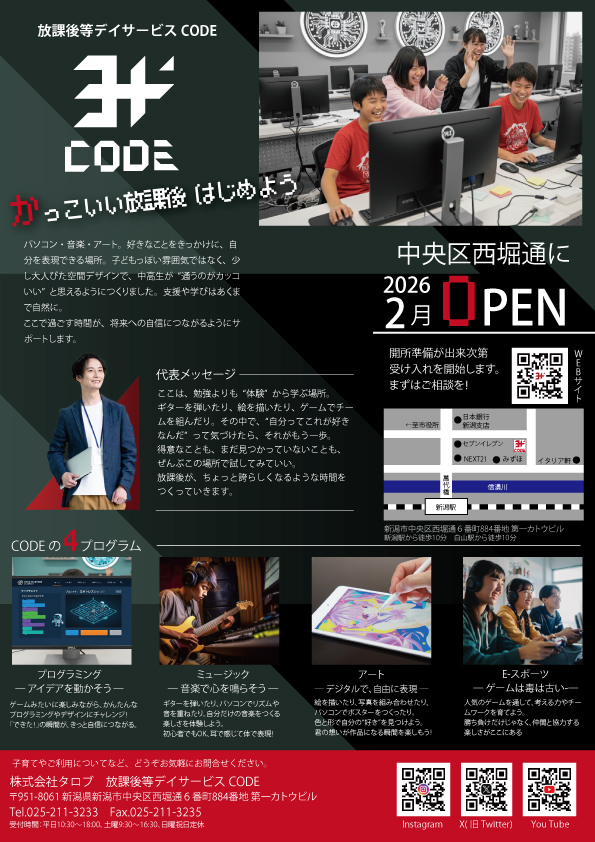
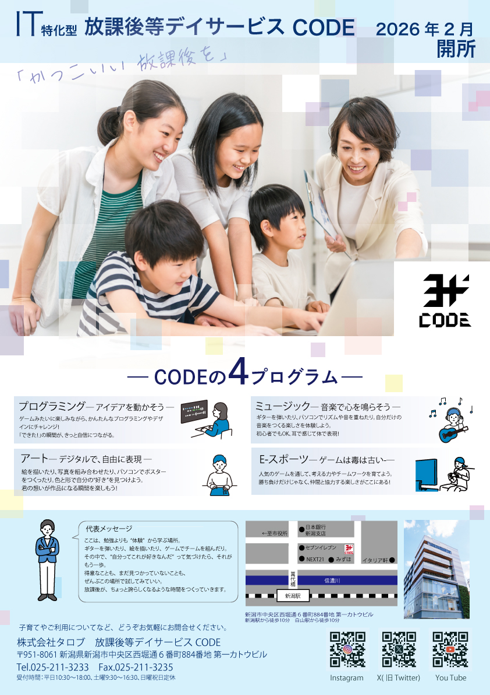
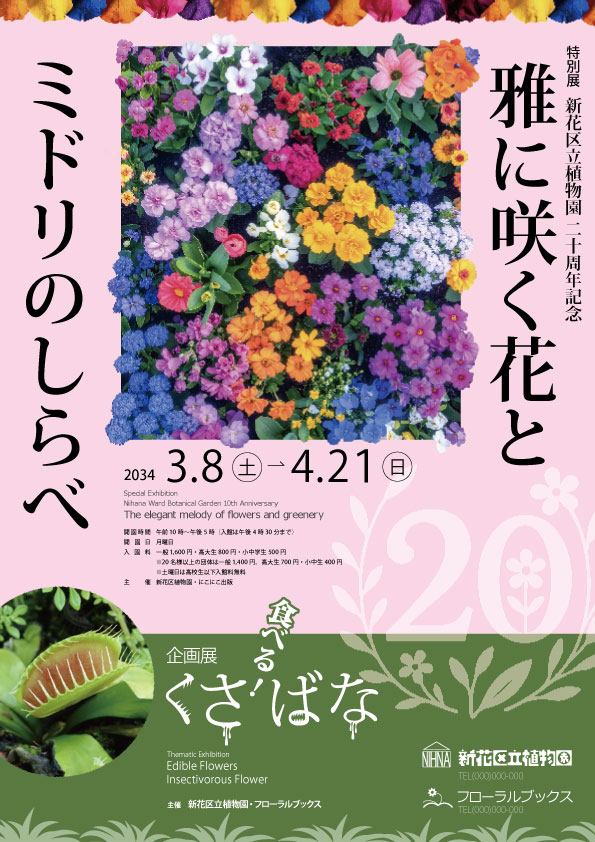
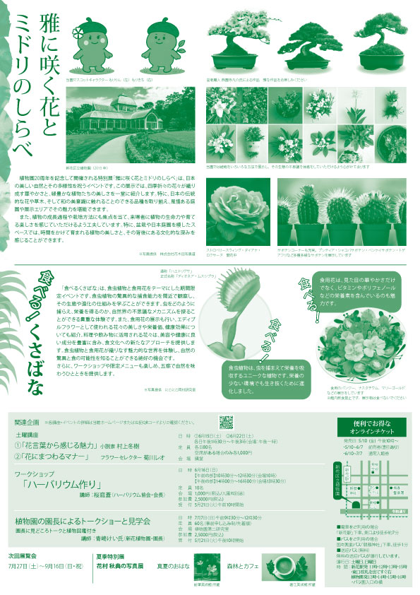
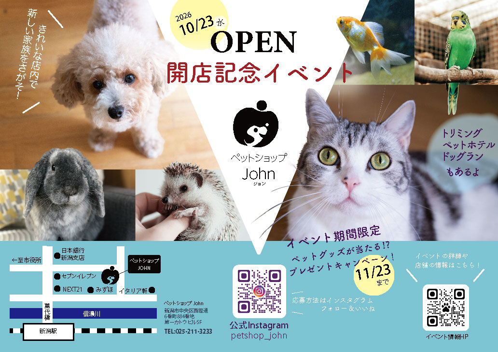
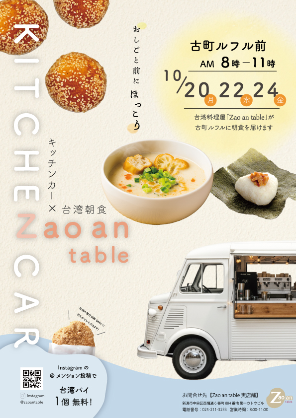
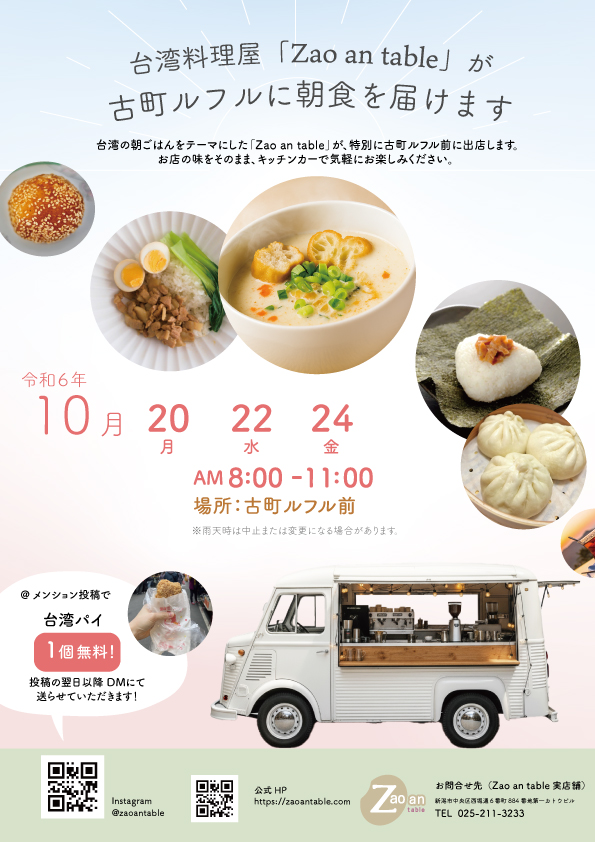

架空の福祉施設の問い合わせ促進チラシ
IT特化型の放課後等デイサービスのオープンチラシです。


Akinori Okamura's portfolio
紙媒体 / ビジュアルデザイン
IT特化型の放課後等デイサービスのオープンチラシです。


架空の植物園のイベントチラシを作りました。
アニバーサリーのワクワク感と上品な雰囲気を出せるよう意識しました。


インスタグラムの登録者を増やす事とLPに誘導することが目的です。
折った時に動物の顔に折り目がつかないようにデザインしました。

知名度が広がることを目的としたイベントのチラシを２パターン作成しました。
朝食が売りの店なので、朝の爽やかな雰囲気や台湾料理の温かい雰囲気が伝わるように意識しました。

